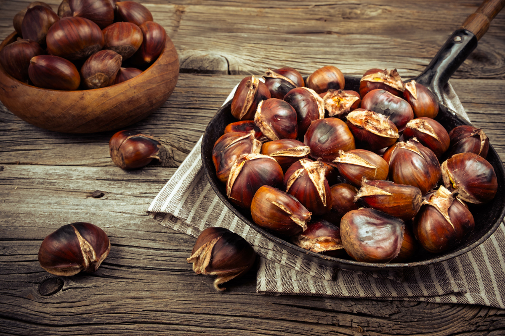
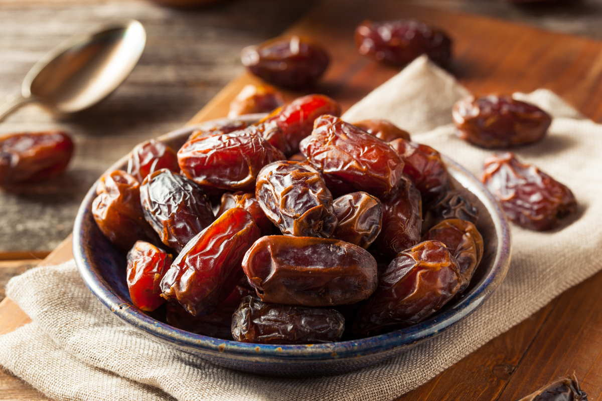
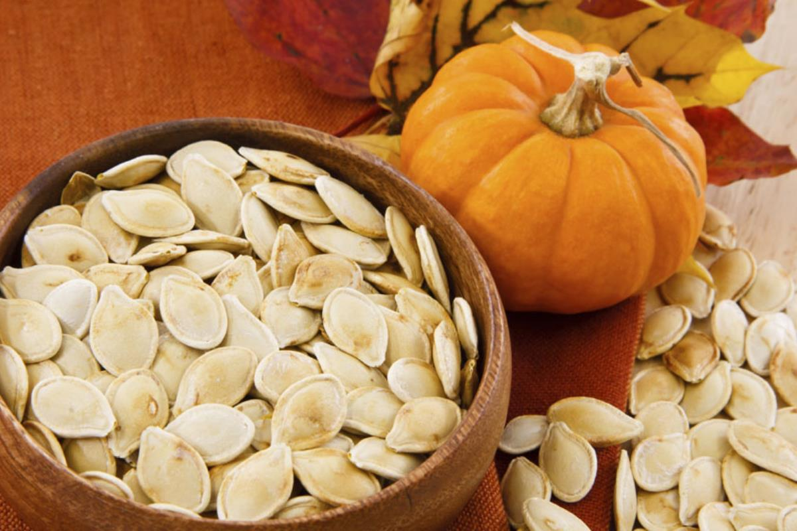

Le nostre offerte autunnali!!!

Acquista 3,24€/Kg
Castagne
Le castagne sono il frutto dell'albero "castagno", pianta
botanicamente associabile a tre specie del Genere Castanea: sativa, vulgaris e
vesca, tipica delle regioni temperate di Europa, Asia e Africa occidentale.
Grazie al loro elevato valore nutritivo, nella farmacopea popolare, le castagne sono
indicate in caso di avitaminosi, anemia e debilitazione.
L'infuso ed il decotto di foglie, ricchi di tannini, sono utili in caso di bronchiti
e diarrea.
Grazie alla loro azione antisettica, i gargarismi sono un ottimo rimedio contro
infiammazioni di gola e bocca.
L'acqua di bollitura delle castagne costituisce un ottimo fertilizzante per le
piante.
| Castagne, valori per 100g | |
|---|---|
| Energia | 193kcal |
| Fibre | 8,30g |
| Carboidrati | 41,80g |
| Grassi | 2,40g |
| Proteine | 3,70g |
| Acqua | 42,40g |
Acquista 3,24€/Kg

Acquista 9,99€/Kg
Datteri
Il dattero è il frutto commestibile della palma da datteri
(Phoenix dactylifera). È un frutto carnoso, oblungo, lungo da 4 a 6 cm, contenente
un "nucleo" allungato, segnato con un solco longitudinale. È un frutto molto
energetico.
Il giuggiolo (Ziziphus jujuba), è detto anche dattero cinese.
Chiaramente, i datteri possono essere gustati "al naturale", avendo cura di
prelevarne il seme appuntito prima di mangiare il frutto; in ambito culinario, i
datteri si abbinano perfettamente a formaggi e mascarpone, oppure a frutta secca
come noci, mandorle o nocciole. Ancora, i datteri sono utilizzati anche per decorare
dessert.
| Datteri, valori per 100g | |
|---|---|
| Energia | 253kcal |
| Fibre | 8,70g |
| Carboidrati | 63,10g |
| Grassi | 0,60g |
| Proteine | 2,70g |
| Acqua | 17,30g |
Acquista 9,99€/Kg

Acquista 8,55€/kg
Semi di zucca
I semi di zucca sono i semi commestibili che si trovano
all'interno delle zucche. Dalla forma ovale e dal colore verde chiaro, diventano
bianchi una volta essicati, hanno un gusto aromatico e leggermente dolce e una
consistenza croccante.
Anche se a volte erroneamente possono essere considerati elementi di scarto, sono
invece estremamente gustosi e possono essere usati per insaporire insalate o
prodotti da forno.
Oltre a poter essere raccolti dall'interno della zucca durante la sua lavorazione,
sono anche acquistabili già pronti all'uso nei supermercati.
Inserirli nella propria alimentazione è assolutamente consigliato, visto che i semi
di zucca oltre ad essere gustosi apportano anche numerosi benefici per la salute.
I semi di zucca possono aiutare ad alleviare i sintomi dell'iperplasia prostatica
benigna, una condizione che porta la ghiandola prostatica a ingrossarsi, causando
problemi con la minzione.
In uno studio del 2021, il consumo di olio di semi di zucca si è dimostrato in grado
di ridurre i sintomi e migliorare la qualità della vita in 73 persone interessati da
questa patologia.
L'assunzione di semi di zucca sembra possa anche aiutare a trattare i sintomi di una
vescica iperattiva e a migliorare la funzione urinaria.
| Semi di zucca, valori per 100g | |
|---|---|
| Energia | 160kcal |
| Fibre | 1,7g |
| Carboidrati | 3g |
| Grassi | 14g |
| Proteine | 8,6g |
| Acqua | 3,1g |
Acquista 8,55€/kg